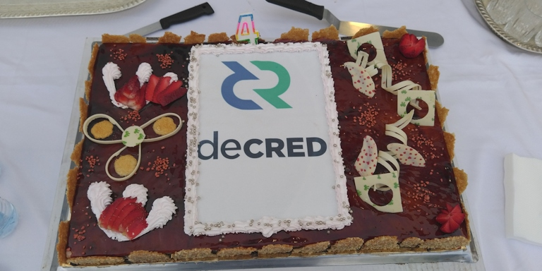

Decred月报 - 2020年2月

图片: 来自摩纳哥@arij的第二个Decred庆生蛋糕
- 2月8日迎来了Decred创世区块四周年纪念日，全世界至少有11个城市的爱好者参加了第一次周年纪念#DecredGlobalMeetup！
- @Dustorf发表了Decred在2019年的营销工作的报告，介绍了已完成的工作，DCR的支出细节以及关于2020年怎样发展的想法。
- 所有软件代码库正在稳步开发，对dcrd进行了优化，完成了大量的DEX组件，并且移动应用程序已准备好从新的共识规则和更安全的SPV中得到性能提升。
- 新的decred.org网站于3月初发布，重点关注社区在2019年确定的关键词，并以易于访问且美观的方式进行重新构建。
升级通知
新的DCP-0005链上共识规则投票 已通过，预计在3月13日左右在网络中激活。请花点时间升级您的软件，以保持与网络的连接。
开发进展总结
dcrd: 2月大量的工作都集中在重新构造 secp256k1 软件包上以此引入更专业的优化：
- secp256k1 软件包是独立于Go标准库的加密 API 制作而成，可消除许多不必要的转换，并在将来得到更多优化
- 直接执行签名验证，而不是依赖于标准库，这将允许针对secp256k1曲线进行优化
- 引入了用于固定精度字段算术的专用代码，该代码比标准库中的任意精度大整数快得多，并且时间恒定
- 添加了优化的平方根字段计算，其计算速度大约是使用大整数的两倍
由于部分优化较难审查，因此我们非常谨慎的介绍了它们，并记录了所使用的全部技术。如果您喜欢数学和快速位级计算，那么这本读物会很有趣。
从总体上看，secp256k1 的主要好处是提高了速度和优化内存使用率，这在整体软件性能中起着重要作用，因为签名验证是主要的操作。另一个重要的好处是，完成此操作后，secp256k1 操作将保持恒定的时间，从而提高了对旁路攻击的抵抗力。对于执行大量签名的多方协议，这是一个重要属性，multisig Schnorr 协议就是一个示例。
其它改进：
- 通过明确表示所需的脚本形式，而不是依赖于标准策略代码（例如，允许进入内存池并通过网络中继的代码），共识代码变得更加强壮，这可能会在未经共识投票的情况下发生变化。
- 减小主网的投票范围，以防止不太可能发生的DoS向量攻击
- 现在，将分别跟踪具有未批准输入的选票，使区块模板生成和费用估算更加有效
- 为TCP连接和对等非活动节点添加了超时参数
- rpcserver 作出明确的关于它接受在代码（原子VS硬币）的帮助信息和API文档的单元
- 定义有线错误类型，禁止不遵循有线协议的对等节点
- 添加了创建未签名选票的命令，以促进离线购票并在将来支持Trezor购票（仍需要修改Treezor固件以支持Decred购票）
- 添加了用于为交易输入脚本创建签名的命令
- 添加了discoverusage命令以手动触发地址或帐户使用情况的发现，而无需重新启动钱包
- 添加了RPC来启动帐户混币服务，Decrediton将使用该服务
- 简化了存储库模块结构以减少维护负担
- 添加了用于生成统一加密安全伪随机数的软件包
- 更改了对等种子以使用HTTPS API
- 多次代码清理
- 增加了用于DCR支付的BIP-0021链接的生成
- 添加了警告以备份兑换脚本
- 代码库更新为Electron 8
- Bug修复和用户界面调整
- 经过数月的工作，启动逻辑的大型重构已合并
Politeia: 后端更改：
- 会话已移至 userdb以允许手动使会话无效，也可以作为运行politeiawww的多个实例的步骤（出于可伸缩性和容错性）
- RFP提案所需的提案元数据已添加到缓存
- 合并 StartVote v2 （在12月介绍）
- 添加了通过短命令检索提案的后端路由（这将允许在GUI中使用较短的URL）
- CMS得到了临时承包商的初步支持和一些较小的修复
前端更改：
- 为评论添加了平面显示模式，以帮助发现新评论而无需在整个评论树中查找它们
- UI调整和性能优化
- 大多数新的UI设计已实现。最初的版本是开发人员为使某些事情动起来而进行的粗略测试，而新版本则由设计人员正确地完成，以与其余的Decred外观和风格相匹配。
- 人性化时间单位](https://github.com/decred/dcrpool/pull/151)配置
- Bug修复和用户界面调整
dcrlnd: 到v0.9.0-beta版本为止，上游更改的大量移植工作已完成。
cspp: 多项修复和改进错误的处理。
dcrdex: 开发亮点:
- 客户端RPC服务器，用于命令行/脚本客户端控制
- 基于密码的密钥加密软件包，用于保密存储
- 客户端时间顺序队列和混洗验证
- 客户端登录和连接功能，使用应用程序范围的密码
- 实现了一种不易的确定性顺序匹配算法，其中基于客户端的加密承诺对时间队列进行了改组，并在时间关闭时向匹配引擎显示了原像（这里更改规格）
- 在基于浏览器的GUI客户端中添加了钱包页面，从而可以创建和控制交换钱包
- 客户端数据库备份
- 将所有匹配/交换数据存储在服务器数据库 中，以允许服务器证明已接收到来自客户端的与交换有关的消息
- 更新的版本说明
来自7个贡献者的25个合并请求合并，添加了12K代码行，删除了3K代码行（在这里提交摘要）。
dcrandroid: 在Google Play上发布的1.0.1版修复了多个Bug，包括v1.5模块以支持新的共识规则。
开发中：已实现向多钱包格式的迁移。
dcrios: App Store上发布的1.0.1版修复了一个错误，并包括v1.5模块以支持新的共识规则。
开发中：
- 攻击成本估算页面最终合并。这项工作是由Raedah Group于6个月前开始的，由@ademuanthony和@dmigwi进行了主要贡献，使用了来自@zubair的研究（该研究基于活动证明论文的模型，该模型由@jy-p调整，并且与本文由@ buck54321）。该页面可在此处进行公开测试。
- 新的混合硬币和隐私保护参与页面
- 选票图表的平滑模式
- Bug修复和UI调整
docs:
decred.org: 删除了对Slack的提及，进行了较大的设计和内容更新（请参阅下面的“扩展”部分）。
其他：
- Bug Bounty发布了一个更新：到目前为止，已处理97个提交（自10月更新以来增加了14个），其中11个有资格获得付款（+1）。
- 寻求如何开始贡献的开发人员可以关注@dcrgoodfirstTwitter帐户。
2月的开发活动统计：分布在20个代码库中的309个活动PR，274个主提交，添加52K行代码和删除28K行代码。每个代码库的贡献来自2-6个开发人员。
人员
欢迎新的首次贡献者，他们的代码已合并到主代码库中：@mkingori(dcrdata)。
恭喜新贡献者通过CMS流程：@dezryth（市场营销），@guisso（开发）。
恭喜在decred.org上列出的新贡献者：Mike Winslow（@Exitus，媒体制作）。
社区统计：
- Twitter 粉丝: 40,901 (+41)
- Reddit 订阅: 9,738 (+15)
- Matrix 用户: 565 (+32)
- Discord 用户: 1,087 (-1,583), 已验证发布: 450 (+17)
- Telegram 用户: 2,678 (-50)
- YouTube 订阅: 3,990 (+40)
- Facebook 粉丝: 3,580 (+17), 喜欢: 3,249 (+15)
- LinkedIn 粉丝: 719 (+30)
- GitHub dcrd 星星: 535 (+2), 分叉: 1,496 (+20)
治理
2月份，社区基金获得了13,018 DCR，并支出了12,622 DCR。以2月份的每日DCR/USD的每日平均汇率$20.48计算，这是收到的$267K和花费的$258K。以一月份的每日平均汇率$18.00计，该月完成工作的美元费用为$227K。截至3月2日，库存余额为643,179 DCR（1,160万美元，折合18美元）。
我们的网络第6期提供了一个有用的图表，其中包含社区基金流入和流出。截至1月30日，社区基金已收到总计93.9万DCR，已支出29.9万DCR。
2月提交了4份新提案，其中5份开始投票。
- @Exitus的视频制作提案每月要求最高$ 2,400的批准，其中有92.5％的批准和24.8％的选民参与。
- @Checkmate的第二项研究计划获得批准，批准率为81％，选民参与率为21.5％。它要求预算为$ 17,500，以继续@Checkmate的研究和其他活动，包括帮助从他和@permabullnino的工作中获得一些图表到dcrdata上。
- 来自@Haon的欧洲营销和活动的提案最初得到$ 75,000，但得到了@ jholdstock，@ kozel，@ jazzah，@ mm和@karamble的支持，但预算却减少到了$ 49,000，并取消了Web Summit活动以响应反馈。该提案于3月3日被拒绝，仅获得38％的支持，而选民的参与率为25％。
- 俄罗斯的视频制作提案被21％的批准和20％的投票率拒绝了。
- oscargamboae提出的Decred Creative Economy提案以3％的批准被否决，成为第一个未能达到20％法定人数要求的提案，只有15％的合格门票可以投票。
有关本月“Politia”活动的更多详细信息，请参见《Politia Digest》第27期和第28期。
网络
全网算力: 2月份的哈希率以427 Ph/s开始，以356 Ph/s的结束，谷值263 Ph/s，并在整个月达到578 Ph/s的峰值。截至3月1日的池哈希率分布：Poolin 32％，UUPool 27％，lab.antpool.com 12％，BTC.com 1.7％，F2Pool 1.5％，Luxor 1.3％，BeePool 0.1％，CoinMine 0.02％和其他〜24％dcrstats.com。算力比例是近似值，无法准确确定。
Staking: 截至3月5日，30天平均票价为132.1 DCR（-6.2），价格在119.8-157.9 DCR之间变化。锁定金额为540-56.5万DCR，相当于供应量的48.49-51.19％。
自1月下旬以来，锁定 DCR的数量下降了。从5.65M至5.40M，或供应量的51.5％至48.5％（-3％），然后恢复至〜50％。选票价格下跌至119.8 DCR，但随后迅速飙升至多年来的最高水平。
节点: 整个2月，平均有165个公共对等节点，总共341个节点。2月的平均版本分布：40.8％使用dcrd v1.4，18.2％使用dcrd v1.5，9.1％使用dcrd v1.5 dev和RC build，12.3％使用dcrd v1.5.1，4.1％使用dcrd v1.6 dev内部版本，使用dcrwallet v1.4的占4.7％，使用dcrwallet v1.5的占2.6％，使用dcrwallet v1.5.1的占2.1％。
混合硬币（隐私保护设置）的数量达到了流通DCR供应量的20％。Decred的CoinJoin交易量介于每天50-100K DCR之间，并于2月22日创下历史新高154K DCR ，相当于超过300万美元。这些和其它指标由@Checkmate在我们的网络第10期 (tweet)中发布。对于当前数字，dcrdata alpha部署了每天混合的混合硬币百分比和DCR数量图表。
攻击成本计算器是一个新的Web工具，可用于基于dcrdata alpha当前可用的多个变量来估计攻击网络的成本。
整合
有讨论称，一个DCR持有者被Ledger钱包的Chrome扩展程序骗了，该扩展程序要求获得钱包种子。从评论看来，谷歌已将其从商店中删除，但是发生在一些人被骗之后才删除。请特别注意您将种子委托给任何软件！
尽管最初对Decred充满热情，甚至举办了几次联合活动，但由于交易量低，OKCoin决定暂停 DCR/USD交易。
KuCoin 于2月17日宣布，它将在两天后的2月19日开始对存户的DCR进行质押。KuCoin通知在交易所持有DCR的用户，如果他们不希望参与质押，请发送DCR到其它钱包。
KuCoin将在每个日整DCR的锁定比例并计算用户的每日收入等等。
中文社区提醒：请勿将自己的DCR长期托管于第三方钱包及交易所，保管好个人钱包的种子秘钥是唯一安全方法！
警告：Decred Journal的作者不了解上述任何服务的可信赖性。在将您的个人信息或资产信任给任何实体之前，请先进行自己的研究。
外展活动
2月8日，Decred满4岁，社区通过#DecredGlobalMeetup庆祝了这一活动。活动在全世界至少十二个城市举行，以庆祝Decred建立的社区和技术。@Dustorf撰写了一个博客和一个推特文章，总结了Decred的最新进展。
@Dustorf发布了一份营销报告详细介绍了2019年与项目营销相关的所有费用。该报告包括对哪些有效，哪些无效以及明年的处方的检查。这三个高级别的建议包括：想象使用Decred技术栈可以在社交上实现什么，打破泡沫将Decred扩展到当前加密货币以外的领域，并利用社区中每个人的力量。该报告要求按地理区域分散营销工作。为此，拉丁美洲已经通过了一项提案。提出了欧洲提案，但被拒绝了。预计将在3月针对巴西，美国，加拿大和澳大利亚提出提案。由于Decred的行销历来都是争论的话题，Reddit。
该decred.org网站改造部署在三月初，一个新的视觉审美，新的解释器的视频，以及新的子页面为特色Decred的历史和它的三个原则：安全，适应性和可持续性。该网站反映了商定的消息传递，根据这三个原则将Decred定位为超值商店。
Decred in Depth于2月发行了两集Decred，@ammarooni的Decred, an Economic Breakthrough，@elian的DCR in LATAM。此外，@ mr.black与@Checkmate和@permabullnino合作发布了新的，关注交易的播客，名为Rough Consensus。
DCR Comic启动了dcrcomic.org网站，托管该团队的所有作品，其中最新的漫画解释了闪电网络。
@Checkmate发表了一篇有关以太坊ProgPoW 辩论的非常有趣的文章，描述了以太坊治理体系的缺点以及如何使用Decred的工具和方法来解决它们。这是将Decred的差异化观点插入更广泛对话中的一个很好的例子，并且在以太坊社区中得到了很多人的好评，包括POV Crypto播客的联合主持人David Hoffman。
@dezryth发布了1 月份他的Facebook和活动计划的第一次更新。
Monde PR参与进来并迅速建立了项目公共关系目标，目标受众，关键信息，信誉要点，记录了关键主题，进行了竞争对手分析，记录了所有发言人，创建了要推广的关键故事，甚至开始宣传，产生了很多有价值的展示位置：
- Cointelegraph中的一篇文章，特色是@elian和@akinsawyerr对全球采用区块链的评论。
- Finance Magnates中的一篇文章，重点介绍@ jy-p关于比特币挖矿和共识模型集中化的评论。
- AMB Crypto中的一篇文章，重点介绍@richardred对比特币建设国家的评论。
活动
图片: #DecredGlobalMeetup 在墨西哥
Attended:
- 2月4日至6日- Africa Tech Summit -卢旺达基加利。@akinsawyerr和@beansgum参加了这次600多个参观者活动，Akin在一份完整的报告中分享了他与监管机构，初创企业和风险投资人建立联系的经验。“当Decred准备积极寻求建立在我们堆栈之上的用例时，将有很多开放而有能力的手可以与之互动。”
- 2月6日- Decred Global Meetup -美国芝加哥。(记录)
- 2月6日- Decred Global Meetup -贝洛奥里藏特-巴西。(照片)
- 2月6日- Decred Global Meetup -阿根廷布宜诺斯艾利斯。由@EspacioBitcoin托管。(照片)
- 2月6日- Decred Global Meetup -墨西哥墨西哥城。由比特币大使馆酒吧主办。(照片, 视频)
- 2月6日- Decred Global Meetup -巴西纳塔尔。@guisso：“ T恤的有趣之处在于，它们最初放置在入口桌上，没有人表现出兴趣，但是在活动结束时，当他们了解该项目时，每个人都想要一件”。(照片)
- 2月6日- Decred Global Meetup -巴西里约热内卢。不乏啤酒。(照片)
- 2月6日- Decred Global Meetup -巴西圣保罗。(照片)
- 2月6日- Discover Decred -加拿大多伦多。(照片) -2月8日- Decred Global Meetup -巴西萨尔瓦多。(照片)
- 2月8日- Blockchain and AI -摩洛哥卡萨布兰卡。该活动的特色是第二个众所周知的Decred Cake。（照片：twitter, matrix）
- 2月8日- Decred Crypto Hangout -尼日利亚拉各斯。五位Decred贡献者分享了有关Decred各个方面的知识。超过25位参与者和@ yellowcardio，@ HuobiAfrica和@ Telos4africa的代表参加了该活动。(报告)
- 2月27日- 3er After UX Crypto -阿根廷圣菲。Decred是赞助商。(照片)
- 2月27日- Decred and Stamping.io Meetup -秘鲁利马。@victorarubin向利马的Stamping.io和生活领导社区介绍了Decred，约60人参加了会议。 (视频)
即将到来的:
- 3月12日- Women in Blockchain -墨西哥墨西哥城。由比特币大使馆酒吧主办。
- 3月12日- Decred Meetup -乌拉圭蒙得维的亚。
- 3月12日至13日- Blockchain Summit Latam -巴拿马巴拿马城。Decred将成为白银赞助商。
- 3月17日- Decred Meetup -西班牙毕尔巴鄂。
- 3月18日- Decred Meetup -西班牙巴塞罗那。
- 3月18日- Campus Party Amazonia -巴西马瑙斯。Decred将进行2次演讲和其他一些活动。
- 3月20日- BlockchainUA -乌克兰基辅。演讲者代表Decred参加东欧最大的活动。有关详细信息，请联系#events 室中的@cryptotexty。
- 3月20日至21日- CIBTC Blockchain Summit -西班牙莫特里尔。Decred将成为金牌赞助商。
- 3月24日- Decred Meetup -智利圣地亚哥。
- 3月24日- Decred Meetup -西班牙马德里。
- 3月26日- Decred Meetup -西班牙比戈。
- 3月27日- Decred Meetup -西班牙巴伦西亚。
- 3月28日- DevOpsDays -巴西纳塔尔。@guisso将介绍如何使用docker-compose为dcrlnd实现测试环境。
- 4月5日- Toronto Blockchain Week -加拿大多伦多。@ ammarooni，@ michae2xl以及可能还有@zubair正在计划在那里。
- 4月9日- Bitcoin Road Trip -阿根廷布宜诺斯艾利斯。
- 4月13日至17日- Jalisco Talend Land -墨西哥瓜达拉哈拉。Decred是铜牌赞助商。
- 4月24日- Meetup -玻利维亚拉巴斯。
- 5月6日- Bitcoinference -墨西哥坎昆。
- 5月30日至31日- Bitconf -巴西圣保罗。Decred将就各个主题进行多次演讲。
媒体
精选文章：
- @Dustorf发布的Decred 2019年营销报告介绍了2019年的营销工作，其中花费了785K USD（与上一年相似）。该报告还对如何发展和分散项目的营销工作进行了深思熟虑。(blog.decred.org)
- Decred On-Chain: @permabullnino的选票出资率 (medium)
- Decred On-Chain: @permabullnino的宏观+微观展望 (medium)
- Decred，@ Checkmate的The Resilient Stronghold，通过查看比特币和Decred的弹性，总体心理以及用户采用率来结束这3部分系列 (medium)
- @DecredDragon每周四继续发行新的Decred Drive期刊-也感谢《华尔街日报》的客气话。
- CCryptoEQ给予Decred铜牌评级，理由是人们担心购买选票的美元成本较高，与其他SoV硬币相比通货膨胀率较高以及选票成本变得更加不稳定 (cryptoeq.io)
- 区块链现状：专家权衡约瑟夫·伯奇（Joseph Birch）的全球采用情况-拉塔姆（LATAM）上的@elian和非洲（@tein）上的@akinsawyerr(cointelegraph.com)
- 四年后，Decred会比特币更好吗？由Liam Kelly (cryptobriefing.com)
翻译:
- 2020年1月的Decred Journal被翻译成阿拉伯文（@arij），中文（@Dominic）和西班牙文（@francov_）。谢谢大家！
视频:
- Why DEX由@Exitus制作 (youtube)
- @Exitus决定每两周更新一次新闻-2020年2月25日，这是批准的提案中首次发布的每两周一次更新 (youtube)
- @ivandecredfan在提案失败后仍继续用俄语制作教育性Decred视频 (youtube)
音频:
- Decred in Depth Ep. 18. @elian谈到代表拉丁美洲各地的Decred的道路上的生活，在不同地方的不同用例，以及强调全球Decred社区的战略。 (libsyn, soundcloud)
- Rough Consensus Ep. 1. @Checkmate和@permabullnino开启了一个新节目，谈论衍生工具，替代季节和区块链动力学(libsyn)
- Decred in Depth Roundup Ep. 1 (or Ep. 20 of Decred in Depth). 加入@ Checmkate，@ permabullnino和@ mr.black讨论区块链资金和安全性，51％攻击及其最新项目。 (soundcloud)
社区讨论
通讯系统新闻：
- 2月28日，通向Matrix和Discord的Slack桥退役，大部分通道关闭。导致此决定的问题包括2018年自动邀请的中断性关闭，大约一周后DM和其他历史记录消失以及大多数活跃的主持人迁移到Matrix。那些希望继续关注并参与聊天的人转移到了Matrix和Discord，其他人则表示了欢送。
- @Exitus清除了Discord的闲置账户，巩固了Decred Discord居民中对权力的坚定控制。修剪会删除30天内未验证且未登录的帐户。任何删除的帐户都可以自由重新加入并通过验证过程。
- DCRComic团队在Telegram上添加了一包贴纸，可以通过单击此链接或单击聊天中其他人发布的贴纸来添加它们。电报用户现在可以选择两个Stakey主题贴纸包！新的设置补充了@lustosa生产的Stasta贴纸的现有设置。似乎最好不要在2个月前从该提案中花1400美元购买另一套Telegram贴纸！
精选的Reddit帖子：
- @Checkmate分享了他的Decred Wishlist，其他人则对@Checkmate 的建议以及自己的一些建议进行了回应。
- Decred营销报告中有15条评论，有的在庆祝，有的则在它的某些方面存在问题。
精选的Twitter讨论：
- @Exitus 从Ark Invest视频中识别并提取了一段剪辑，其中Cathie Wood提到Decred是“有前途的”。
- @degeri 分享了Altered Carbon Season 2第5集的屏幕截图，其中在屏幕上以一系列加密货币（包括Decred）报价价格。DCR是唯一显示有两个数字的货币，这暗示了对于解释DCR今年2400价格预测的含义的猜测。
- @ jy-p经过一段漫长的休假后又回到了Twitter，他想知道[从事](https://twitter.com/behindtext/status/1232381271252271104CC项目但没有积极设计Oracle的人们正在做什么。
- @richardred 有关Decred DAO的系列，这是@rzs在Medium上的响应提示，为什么Decred没有出现在DAO 更新中。
- DCR Time来自DCR漫画团队。
- 克里斯·伯尼斯克（Chris Burniske）在他的《主权加密网络》论文中引用了乔尔·莫内格罗（Joel Monegro）的一句好话，他说Decred由于其分散的治理原则而被确立为长期主权。
- @Checkmate将社区基金总结为Decred项目的心脏。
市场
2月DCR交易价格在16.71-24.75USD，BTC 0.0019-0.0024之间。平均每日价格为$ 20.48。
相关外部信息
当以太坊ProgPoW被批准进入核心开发者电话的硬分叉时，辩论的风格被重新点燃，导致更广泛的以太坊社区中的许多人感到困惑，因为ProgPoW没有那么多的支持。哈德森·詹姆森（Hudson Jameson）的这篇文章介绍了ProgPoW的历史，得出的结论是，尽管变化可能是好的，但必须认真对待维护有争议的硬分叉的威胁，这不值得将网络分叉。以太坊社区正在使用各种信号机制，包括Twitter 民意调查和EIP 公开信标签广告系列。作为哈德森的职位细节，已经进行了广泛的努力来评估以太坊社区对ProgPoW的看法，硬币投票和矿工投票都强烈支持ProgPoW。已使用多种其他方法从社区收集信号，包括Kialo以及可能的Reddit帖子。@Checkmate通过一些观察加入了辩论他如何使用Decred的方法了解如何处理此问题。非正式治理的问题在于，不管收集到多少信号，每个人是否都有发言的机会，不可避免地会有少数人需要做出判断并推动在其下划清界限。这是一个混乱的过程，最终很少有人对结果感到满意。
有迹象表明，Cosmos区块链背后的公司Tendermint 发生了重大冲突 -第二名Zaki Manian从Tendermint辞职以组建自己的专注于Cosmos的公司，并表示首席执行官（Jae Kwon）正在通过资源不足的开发和集中精力来取得进步。在一个新项目（Virgo）和Twitter角色（@jaesustein）上。Jae的这次更新说明了敬虔概念在口角中发挥了不同寻常的作用。Cosmos在2017年的ICO中筹集了1700万美元，几个月后价值约10亿美元，在2019年3月，该项目在网络的第一次迭代发布时又筹集了900万美元，但现在的迹象表明，向功能正常的区块链枢纽取得了进展从那时起有限。
Block.one的首席执行官布伦丹·布鲁默（Brendan Blumer）醒来发现EOS网络的规则已在一夜之间被更改，有15个BP提议并通过了更改，以将发行量从5％降低到1％。发生这种情况并不令人意外，因为在白皮书中没有花大力气开发计划中的“工人提议系统”。未使用的4％已在未使用的地址中累积，并且累积的EOS已被刻录一次。为什么WPF基金最终在18个月后的这个特定晚上被关闭，这是一个谜，只有15个EOS BP知道答案。甚至没人给布伦丹抬头！他对此表示满意，当只有15个参与方参与时，通宵更改规则就是分散式治理的工作方式。
比特币ABC开发人员已经发布了他们的计划细节，以实施BTC.TOP的Jiang Zhuoer提出的块奖励资金的变体。此实施将更改计划的以下详细信息：金额减少到5％，资金可以用于任何列入白名单的项目，并且该计划仅在矿工通过BIP9触发后才会生效。BCH区块奖励中任何开发商资金的想法仍然存在很大的反对意见。
币安（Binance）与其中一位使用Wasabi钱包到CoinJoin混合使用其交易并增强隐私的用户进行了纠纷。混合活动提高了用户的风险评分，并且在Binance调查期间冻结了他们的资金。最终，用户同意提取他们的资金，但Binance并不满意，Binance提到遵守新加坡法律来解释其行为。用户必须保证在币安归还硬币之前不再混合硬币！到目前为止，还没有关于以这种方式标记DCR混合器的报告。
Tim Copeland 在Decrypt 中的一篇文章中考虑了以太坊名称服务（.ens）域的隐私含义。尽管许多用户意识到，通过将其域名地址链接到其他地址可能会破坏其隐私，但他们用来支付.ens的交易也可以用于将其链接到他们的资金。
Blockstream是进入银行，被命名为阿凡提金融集团的一个战略技术合作伙伴新的美国银行致力于数字资产- 覆盖由CoinSpice（辣插图）。条款没有透露。
Casa酒店绕组向下其节点硬件产品，其中它已经售出2000台，并且还打开采购其代码。Casa将专注于每月10美元的密钥管理订阅服务。
Tron的Justin Sun忙碌了一个月，他购买了基于Steem区块链（及其主要用途）的内容网站steemit.com，并立即宣布steemit.com将转向Tron区块链。这导致Steem的证人（制片人）制定了一个软分叉，将冻结“ Steemit Inc忍者开采的股份”，这是该公司在多个帐户中持有的未知数量的STEEM。在3月1日，贾斯汀打回来的招聘交流（Binance和Huobi）投票支持他的一套控制下的证人，将恢复软叉并释放Steemit STEEM的。从用户的反弹之后就显得既Binance和Huobi 打算放弃STEEM，退出与Sun的任何安排。
也有人建议贾斯汀·孙（Justin Sun）使用来自“锡安”帐户的投票来干扰Tron Apps的社区投票-他似乎证实了这一点，并指出这是暂时的，直到3位超级代表对其软件进行了升级，以“防止他们损害网络”。
IOTA的协调员已于2月13 日暂停，暂停了网络，以调查Trinity盗窃总额达160万美元的索赔。当协调员关闭了几天的停机时间后，IOTA进入了灾难状态，这表明台式Trinity客户端（由IOTA Foundation维护）的所有用户的所有私钥都受到了破坏。IOTA的8.55 Ti被盗，当时价值约230万美元。Trinity受到在MoonPay服务的第三方依赖关系中插入的恶意代码的破坏，该代码使用户能够直接在Trinity中购买IOTA令牌。该最新是有Trinity的固定版本和种子迁移工具，IOTA持有者在基金会于3月7日至3月10日之间重新启动网络之前，有7天的时间进行转移程序。IOTA损失了其美元价值的30％撰写本文时（3月5日），但由于网络暂停，拥有自己的IOTA的用户无法移动它们。
Aragon法院推出的，旨在提供一个数字管辖权的DAO在工作。在阿拉贡法院的纠纷是由谁的股份ANJ令牌，并试着猜测的决定，大多数陪审员会选择陪审员解决。247名评委通过共同下注100万个ANT（价值约130万美元）签约了此次发布会。首先，陪审员需要完成带有模拟争议的“ 优先运动 ”（陪审员培训）。
Colony的公开测试版开放。Colony是在以太坊上创建DAO的平台。没有公开列出各个Colony，因此目前尚不清楚有多少个殖民地或将其用于什么目的。Colony计划成为一个通过“ Metacolony”管理的自我维持的公用事业，将来将拥有自己的CLNY代币。在此之前，推出了“ Betacolony ”这个月并获得了10,000个DAI的资助-贡献者可以通过完成任务来赚取DAI和BLNY代币，这些任务从修复硬件钱包支持到博客或发布有关Colony的推文。Betacolony中没有决策工具的迹象，管理员可以创建任务，然后由成员完成并由管理员验证的任务，该管理员处理赏金。
DeFi项目bZx一直是本月有关漏洞利用的许多故事的中心，其新的“快速贷款”功能以创造性的方式用于建立一系列操纵价格预言并立即从中获利的交易。这些漏洞利用的新颖之处在于，所有交易都在同一块中进行处理，这既可以使攻击者获利，也可以使交易无效-由于不需要提供抵押品，因此攻击者的风险非常低。利用之后，主密钥被用来编辑智能合约，以使它们不再能够以相同的方式被利用。
另一个小组挺身而出，说他们在一个月前就bZx的另一个问题发出了警告，他们的回应并没有留下深刻的印象，包括拒绝基于技术来支付合理的赏金。
根据Cointelegraph 在一月份的一份报告，2019年有12家交易所被黑客入侵，总损失近3亿美元，用户登录量达到51万。这提醒您在选择将硬币或敏感文件发送到的交易所时要谨慎。
关于月报
这是Decred Journal的第23期。有关所有问题，镜像和翻译的索引，请参见此处。
在经过最少的健全性检查之后，来自第三方的大多数信息都会直接从来源中继。Decred Journal的作者无权验证所有声明。请当心诈骗，并自行进行调查。
感谢 (字母排列):
- 写作和编辑: bee, degeri, Dustorf, francov_, guisso, l1ndseymm, richardred
- 评论和反馈: ay-p, chappjc, davecgh, dnldd, emiliomann, jholdstock, lukebp, matheusd, raedah
中文社区
欢迎同时关注英文月报了解更多最新消息
中文月报相关意见欢迎提交到Github